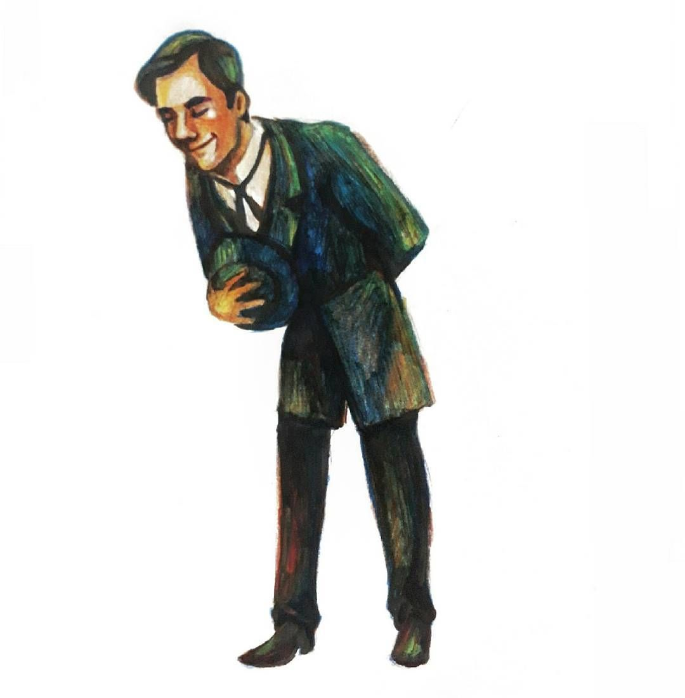
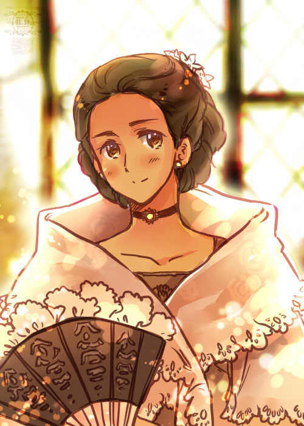

| NOLI ME TANGERE CHARACTERS |
| CHARACTERS |
BIO/INFO |
|  |
CRISOSTOMO IBARRA |
Juan Crisostomo Ibarra y Magsalin , commonly called Ibarra, is Filipino-Spanish and the only descendant of the wealthy Spaniard Don Rafael Ibarra. He was born and grew up in the Philippines, but during his adolescence, spent seven years studying in Europe. |
|  |
MARIA CLARA |
the most dominant yet weakest representation of women in the setting. When thinking of Noli, the name of María Clara can be seen predominantly as the image of the ideal Filipino woman. María Clara is the primary female character in the novel. She is the daughter of Capitán Tiago and Doña Pía Alba. Doña Pía died while delivering Maria Clara. The poor child grew under the guidance and supervision of Tíya Isabél, Capitán Tiago's cousin. |
 |
PADRE DAMASO |
A Spanish friar living in the Philippines, Father Dámaso is an arrogant and pedantic priest who, despite having lived amongst Filipinos and hearing their confessions for over twenty years, is barely able to speak or understand Tagalog, the country’s native language. A shameless loudmouth, he is unafraid of slandering nonreligious citizens who he thinks undermine his power.S |